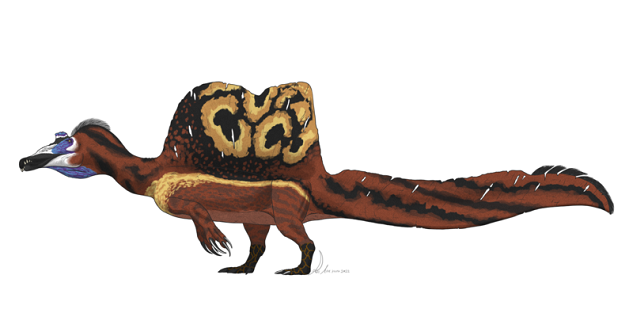
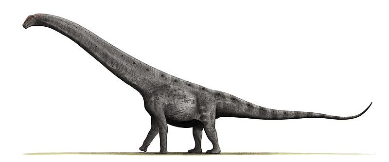

By Richard Bennett
Dinosaurs were creatures that roamed the earth long before any humans. Their reign lasted for about 100 million years, until about 66 million years ago when a meteor the size of Mt. Everest hit the earth near the gulf of mexico killing off nearly all life on earth. However, some dinosaurs did survive, these were known as avian dinosaurs which would evolve into modern day birds!
The Spinosaurus was a dinosaur that was the largest carnivorus dinosuar that we know of. Spinosuarus grew to an estimated maximum length of 47 feet! Spinosaurids were heavy too, weighing in at over 20 tons! Now that's a lot for a diet consisting mainly of fish. They had a large sail-like structure on their backs and a recently discovered (2015) paddle-like tail! What a cool dinosaur! Credit: Wikipedia
Click on the image to see just how big!
Credit for the living rendering: PaleoGeekSquared, CC BY-SA 4.0, via Wikimedia Commons
Credit for the scale image: KoprX, CC BY-SA 4.0, via Wikimedia Commons
The Argentinosaurus is one of the largest land animals ever recorded. This giant approximately weighted in at a staggering 97 tons! Coupled with it's length of a whopping 98ft! Creatures on land literally can't get much larger than this due to the ammount of energy it takes to move oxygen via blood around the body. Argentinosaurus could also use it's incredibly long tail to defend itself and its young from predation. Isn't that amazing?! Credit: Wikipedia
Mouse over the image to see just how big!
Credit for the living rendering: Nobu Tamura, CC BY 3.0, via Wikimedia Commons
Credit for the scale: Slate Weasel, Public domain, via Wikimedia Commons
This page was created to showcase the use of JavaScript events in webpage production. You can see the work here: link
{kind=link}
{kind=link}
{kind=link}
{kind=link}